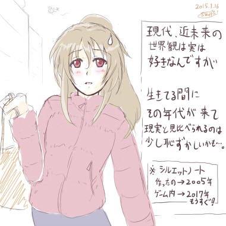
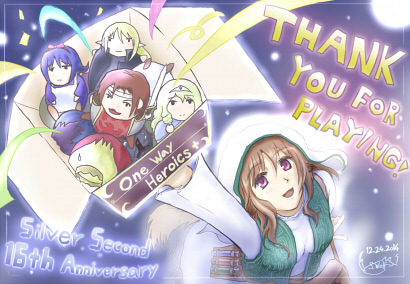
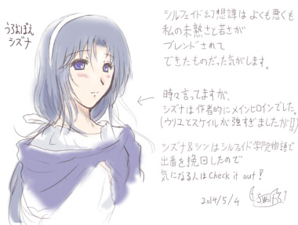
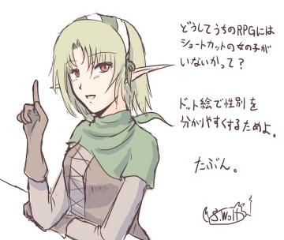
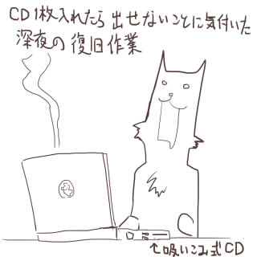
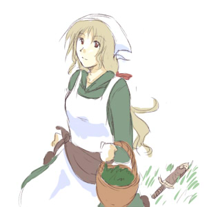

シルバーセカンド開発日誌
【現状は？】
片道勇者プラスが片付く前にどんどん色んなことが進んでいるんですが、
どれもまだ言えなくてモゴモゴする状況になっているウルフです。
今年は、ちょっとしたサプライズが多い一年になるかもしれません。
ひとまずご報告できるのは、片道勇者プラスの翻訳のための準備や、
バグ修正を引き続き行っている状況です！ ということです。
いつ英語やSteam版が出るかという点については、
まだまだ分からない状況です。
翻訳テキストが届いたら、またしばらく
それの搭載で大騒ぎになると思います。
【お話作りのお勉強】

ただいま、人にアドバイスしたり、
出たお話をもっと良くすることを主目的に、
お話作りの基本中の基本から勉強しなおしています。
というのも、これまではお話作りがほぼまるまる我流だったので
「こういう意図で作れば発想する部分だけに注力しやすい」とか、
「お話はここがキモになりやすい、
ここが面白さに繋がりやすい」といったような
お話作りのための方法も基本文法も作り方の意図も何も持っておらず、
お話を改善する方法が「私の好み」以外では
なかなか説明できない状況でした。
ですが大至急に話をよくする方法を提案･共有する必要性が出てきた今、
シナリオ教本をいろいろ読みふけっています。
これまでのようにほぼ「感性」だけで
ゼェゼェ言いながらお話を作っていた状態から、
教本によって「理屈で感性を支える」方法を
習得できそうな気がしているので、
もしかしたら、これによって話作りへの
苦手意識が少し薄れるかもしれません。
正直なところ、お話を書くのは精神的にすごく苦手です。
ちょっと作るだけでとても疲弊しますし、
当然、やるほどネタも枯れていきます。
「ネタの補給速度が書く速度より早い」という
とんでもない人なら死ぬまで物語を
書き続けられるのかもしれませんが、私にはそれはできないでしょう。
ゲームそのものの案だけなら、そうでもないんですけれどね。
（※1本に時間がかかるので、作り終わる前に
次のネタが降ってくる事が多い。
それが実際に面白いかどうかは置いといて、ですが）
今のご時世はインターネットのおかげで
情報共有が進んできたのもあってか、
昔よりもとても分かりやすく、かつ
実践的な方法が書かれた本が増えた気がします。
ある程度いろいろ挑戦してみて壁に行き詰まったら、
そういった本に頼ってみるのもおすすめかもしれません。
悩んでいるときこそまさに「枯れたスポンジ」のような状態なので、
需要に合った本に出会えればその内容をバリバリ吸収できると思います。
【シルバーセカンド16周年！】
メリークリスマスイブ！
クリックで拡大表示

ということで本サイトはとうとう16周年を迎えました！
「小学校のときにレジェレスを遊んでいた私もついに社会人です」
というコメントをいただいたりすることもあって、
時の流れの早さに驚きます。
ここまで長くやってこられたのも、皆さまの
お声や手に支えられてようやくたどり着いた結果です。
応援してくださる皆さま、いつも本当にありがとうございます！
今年の成果である『片道勇者プラス』は、
片道勇者の無印版から2年以上の時を経てようやくリリースできました。
また皆さまのご協力のおかげで、公開から2ヶ月経って、
ようやく修正も一段落しつつあります。
今年の開発の内容は完全に「去年の延長」という感じでしたが、
実はその陰で新しいことも始まっていて、
ちょっと面白いことが進行しつつあります。
結果がどうなるかはまだ分かりませんが、来年をお楽しみに。
【次は？】
次の予定ですが、ひとまず予定通り
『片道勇者開発記』の作成にかかろうと思います。
といっても、片道勇者プラスの熱が落ち着きつつある今となっては、
買う人はそんなにいない気がするんですけどね！
完全にタイミングを逃した感がありますが、どちらかというと
これは今後のための実験的な側面が強い企画です。
前回のグッズに引き続き、あくまでファングッズの一つなので、
あまり期待せずお待ちいただけると幸いです。
【記念セール中です！】
それと16周年を記念して、来年の1月16日まで
シルエットノート を 1500 → 500円（66％OFF）
シルフェイド学院物語 を 2000円 → 1000円（50％OFF）
でセール販売しております！
興味はあったけど買うきっかけがなかったという方は、
もしよろしければこの機会にぜひどうぞ。
主に更新されるコンテンツは開発日誌くらいしかないこのサイトですが、
気が向いたときがあればまたいつか立ち寄ってくださると幸いです。
なお、最も頻繁に情報更新しているのはツイッターの方ですので、
開発状況などに興味のある方はぜひこちらもどうぞ。
（ただし開発以外の話のほうが多いので、あらかじめご了承ください）
https://twitter.com/WO_LF
今年の開発日誌は、これで最後となります。
いつも見てくださる皆さま、遊んでくださっている皆さま、そして
サイトに来て下さる皆さま、今年も一年、本当にありがとうございました！
それでは、みなさまの2015年が良い一年になりますように！ ■
2014-06-07 (土) 肺が…破れた…！？▼【コポ……コポ……】
週のまんなか頃の話ですが、私の肺の一部が破れました。

胸と背中にこれまで感じたことのない妙な鈍痛が起きたので、
「もし心臓だったらまずい死ぬ」と思って病院に駆け込んだら、
なんと肺の病気（というか破損？）のようでした。
死ぬことはなさそうなので、ひとまず一安心です。
いまのところ安静療法中です！
外傷なしに肺の一部が破れるこの症状は、【自然気胸】というそうです。
タバコは一切吸ってないのについにやらかしたかという感じですが、
激しすぎる運動をしたときの息切れしやすさが2割くらい増えたかなというくらいで
生活には支障がありません。ただ胸の奥に変な感触があって落ち着きません。
あと空気が漏れてるのか知りませんが、
横になったとき、胸の奥あたりに「コポ……コポ……」という感触を
感じることがあるのも気胸の現象だそうです。
（ご飯を食べた後の消化時とも少し似てるけど、肋骨の下で起きる感じがする）
やせ形の若い男性の方に多いらしいので、もしそんな気配がしたら
ゴホゴホ言う作業や仕事を避けるとか、病院に行ったほうがいいかもしれませんね。
皆さまもお体にはお気を付けて！
と、ひとまず学んだことの整理でした。
実際のところ、思い出してみれば前々からそれらしい現象はあったので、
今回たまたまそれが表面化しただけだと思います。
とはいえ、パフォーマンスが下がってしまうのはいただけないので、
なるべく体を大事にしつつ、やりたいことはしっかりやりきってしまいたいですね。
以下は気になった拍手コメント返信です。いつもありがとうございます！
＞（前記事の）二刀流について答えて下さりありがとうございました！
＞二刀目は攻撃側:体力or機敏＋武器攻撃力＋1D6 .
＞防御側:体力or機敏＋1D6 で合っていますか？ .
＞そして攻撃側が1D6で3を出したら二刀目をもう一度ロールですよね
実は【防御側：体力or機敏＋2D6】のつもりだったので、
あんまり役に立たないスキルとして設計されています。
全体の設計思想として、【消費HP＋α＝ダメージ期待値と同等】なので、
消費HP1の【二刀流】は弱い相手にさらに追撃するか、
【捨て身】をさらに強化する場面での運用がメインだと思います。
なお、【攻撃側で1D6で3を出したら二刀目をもう一度ロール】
できるのはその通りで合っています。
＞SmokingWOLFさんの作るゲームはエンディングにおいて、主人公が
＞消えたり、●●が獣化したままなど主人公が最善の行動をとっても
＞悲しげな要素が入ることが多いと思うんですが何かそういった .
＞こだわりみたいなものがあるんでしょうか .
「お別れ」という展開は、ワンゲームの終わりを告げるのにあたって
すごく使いやすいので私は多用しています。●●が獣化したままなのは
理由を言うと怒られそうですが、片道勇者オリジナル版の開発後半、
「とにかく早く完成させないと」と感じて長くなってきた時期に
●●のエピローグを書いたためモチベーション的にすでに限界の状態で、
とてもゼロから書き直す気にならなかったからという理由が大きいです。
もう一点は、「高速クリアでも●●のその後が分かるようにするため」です。
これは、ゲーム開発においては「一見どうでもいい理由で
ひどい結果になることがたまにある」という一例かもしれません。
物語の中で説明やこれといった意味もなく逝ってしまう人は
たいていその犠牲者のような気がします。 ■
2014-05-04 (日) 世界観とシステム▼
今回もまたちょっとした小話です。

【世界観とシステムの接続】
さて、私は何かを作るとき、
世界観・ストーリーとゲームのシステムを
可能な限り関連づけたいと考えています。
特に、世界観とシステム・パラメータを接続しやすい『ＲＰＧ』では、
世界観で説明されていない部分にゲーム的ご都合が見えると
ちょっぴり醒めてしまうことがたまにあります。
シルフェイド幻想譚でも色々考えていましたが、ＲＰＧで
ありがちなのは以下のような内容ではないでしょうか。
■敵に回すとパラメータが異常に高いのに、味方にすると弱くなる仲間。
敵のボスに強化魔法をかけられてたとか一言あるだけで違うのに！
■物語で「達人」と呼ばれているのに普通くらいの強さしかない仲間
→ これに関してはちゃんと強くしてあることも結構多いです
■死に瀕した病人を放置して何日経っても絶対死なないＲＰＧ展開。
※というより、助けるイベントが完了するまで進まない
■魔王に狙われてるのに何日経っても滅びない街・滅びない世界
※FF13の最新作がこの辺がんばってたそうですが、どうでしょう？
などです。下2つは今でも難しい課題になっているように感じます。
特に、ゲームが長編になればなるほどそうなりやすいと思います。
【シルフェイド幻想譚で悩んだこと】
ここからは上の話を頭の片隅に置いて読んでいただきたいのですが、
シルフェイド幻想譚の開発中、「システムと世界観の接続」という点で
最も長く悩んでいた部分があります。それが、
「伝説の剣がないと魔王を倒しづらい理由」
でした。
「聖剣に特別感を出したいが、必須アイテムにもしたくない」
という絶妙な線を狙いたかったので、とても悩んだんです。
ひとまず私は、まず過去のゲームにならって
「聖剣で魔王の結界を破れる」という効果を前提にしました。
しかしそうはいっても、伝説の剣がなければ絶対に倒せないようだと
今度は自由度が低くなるので、それだとつまらないよなと思いました。
そんなこんなの試行錯誤の結果、微妙なバランスにできうる調整として
最終的に魔王側には「クリティカルヒット以外が通らない結界」を付け、
聖剣には「必ずクリティカルヒットになる」という効果を設けました。
（そしてプレイヤーは通常武器でもたまにクリティカルヒットを狙えて、
武器や補助魔法によってその確率を上げられるようにしました）
さらに、『手に入れやすい方の聖剣の耐久度を極めて低く』しました。
この結果……。
■伝説の剣と普通の武器の違いをプレイヤーに印象づけられる。
派手なエフェクトと専用効果音でさらに印象アップ！
■聖剣の耐久度を極めて低くすることで、プレイヤーが
おのずとその剣を特別扱いしなければならないようにした。
（何も考えずに使っていると魔王にたどり着く前に折れる）
■伝説の剣がなくても魔王と戦えるが、伝説の剣がないせいで
カキーンカキーンと跳ね返されまくりであきらかに
苦戦している感覚を味わえる戦闘になる
■兵士が何人たばになっても魔王に勝てない理由として納得がいく
という手応えをようやく得られたと感じることができました。
それぞれの要素そのものは全て既存のゲームにあるものでも、
10年前の自分はここまで組み合わせるのにとても苦労していました。
ぶっちゃけ今でも苦戦しています。
しかし、こういった「システムとストーリーの関連づけ」は、
一人の開発者が『システム作成・バランス調整・ストーリー作成』を
同時に行う利点が最大限に活かせる部分だと考えていますので、
個人開発の際は今後もこだわっていきたい部分です。
似たような感じで、片道勇者でもシステムとストーリーの関連づけに
色々とこだわってみた部分があります。
最新作のネタバレになるので今のところは内緒ですけれどね。
え、でもその論理だと片道勇者の住人ＮＰＣが
『闇』から逃げないのが凄くおかしく見えるって！？
え、えーと、それは処理速度的に、スクロール範囲内に
最大約40キャラまでくらいしか設置できない都合で、
住人が闇から逃げるようにするとすぐキャラ数がオーバーフローして
敵が出なくなるのでボツったんです……。
プラス版では、この辺もっと生々しさを持たせられるよう工夫が
できそうなら入れてみたいなと思っている部分です。
以下はいただいた拍手コメントです、いつもありがとうございます！
＞質問があります。サイト説明によると二次創作はOKとの事ですがそれは
＞完全にシルフェイドキャラしか出てこない作品のみOKなんですか？ .
＞シルフェイド＋私のオリキャラが出る作品ではダメなんでしょうか？ .
特にそういった制約は設けておりませんのでご自由にどうぞ！
シルフェイドという名前が最近落ち目なので、
視聴者数的にちょっと寂しい思いをするかもしれませんが
それでもよければ……！■
2014-04-26 (土) 横道 淑女系キャラ▼
先週に引き続き、開発から離れて別のお話を進めています。
まだ結果がどうなるか分かりませんが、皆さんにとっても
面白い話になればいいなあと願いつつボチボチ進めています。
さて、しばらくそんな感じの横道が続きそうなので
小話でも載せていければと思います。

私がＲＰＧを作るときは、趣味による偏りも少し含んでいますが
まずドット絵で見てすぐ分かるように、女キャラは中～長髪または
長スカートというデザインにしているキャラが非常に多いです。
（※ジェンダーなあれこれの主張は全くないので誤解なさらないでください）
結果として、ＲＰＧでは短髪で短パン系の元気っ子な仲間が基本的に出てきません。
ＡＤＶだと顔だけで済む、もとい顔だけで変化を付けなければならない都合上、
バリエーションの一種として短髪っ子が出てくることもあるんですけどね。
で、この調子でＲＰＧの女性仲間キャラを増やすと何が起きるかというと、
どうしても淑女（しゅくじょ）系な外見の人が増えてしまいます。
そこで幻想譚では、主に年齢別に分けて個性付けすることで対応しました。
思い出してみれば、ウリユもイシュテナもスケイルもオーバも全員
長髪で長スカートの淑女です。ええ、思うところはありますが全員淑女ですね？
そして片道勇者もだいたい同じ傾向です。
プラス版では女子仲間を一名増やす予定ですがそれもそうです。
おかげで、まるでメイドしか出てこない系ゲームのごとく
変な偏りが発生してしまっていますが、
当サイトのゲームは健全をウリにしていくつもりなので、
最近のスカート短い女の子ばっかり出てくる作品に
私は全力で対抗していきたいと！！ 思います！！！
なおこれの裏側としては、たまに私が言う
「人間の下半身にはあまり興味がない」という戯言に繋がっており、
何となく私の人魚好きから派生した現象のような気がしています。
以下は気になった拍手返信です、いつもありがとうございます！
＞ブログ、楽しみにしてみています！ ところで、先日プチ作品を
＞やろうとＤＬしようとしたのですが「ページがみつかりません」
＞と出てしまってＤＬできません・・わたしだけでしょうか？
ごめんなさい！ カツカツの財政事情だった都合上、
クリフ迷宮録のファイルを置いてたサーバを経費削減のために
契約解除してしまったので、それで繋がらなくなってしまったようです。
リンクを修正しておきましたので今はダウンロード可能です、
よければぜひどうぞ。
＞突然ですが、（ウディタの）夕一は狩って食って大丈夫ですか？
夕一は食料なので問題ありません。
と、いつの間にかそういう認識になってしまっていましたが、
元はマスコット的なかわいいオマケだった気がしてなりません。■
2013-07-20 (土) 微停滞＋片道TRPG10話！▼【今週の出来事】
今週は新環境の準備や、ゲームの講評やリプレイ編集などで
ほぼ一週間が終わってしまったので、ほぼ進行なしです！
まだお絵かき環境が復旧できていなくて落書きも書けません。
部品ー早く届いてくれー！
それはそうと、今のところの片道勇者+の開発の優先順位は、
1．操作性・インターフェース周りの向上
2．新クラスや新エネミー実装
3．バランス調整 4．その他データ追加
という感じになっております（2と3は入れ替え可能）。
ストーリー要素や新しい仲間を増やしてもよさそうなんですが
今のところ何も思いつかない！
現状ではどうにもその辺りへの欲求が低すぎるのが問題です。
何はともあれ、そこを考えるのは、まだ山ほどある項目を片付けてからですね。
まずは、もっぱらゲーム面の小強化を行っていきたいと思います。
片道勇者+の最新作業としては、
インターフェースを変更できる機能を実装中です。
ゲージが真ん中にあるといやーん！っていう人もいたので、
ゲージを上に移動させたり下に移動させたりする機能ですね。
日本ではどうも私の想定以上に長く遊んでくださる人が多かったので、
海外有料版を出すにあたって、この辺はある程度好みで
選んでいただけるようにしようと思っています。
【片道勇者TRPG 第10話『尋ね者』公開！】
さて、PC破損などあって遅れましたが久しぶりのTRPGリプレイ更新です！
スコーピオの街でクジャータとサントリナを奪還した一行でしたが、
作戦後にゆっくり寝てしまったことで次の日、大変なことになってしまいます。
果たして彼らは街から脱出することができるのか！？
【片道勇者TRPG 公式ページ】
今回も暖かいキャラクター投票コメント＆投稿イラスト、
誠にありがとうございます！
最近やることが多くてセッションしておらず
そろそろプレイのストックがなくなってきたので、
とにかくまずはご飯のためにも片道勇者+をがんばりたいと思います！ ■
2013-07-01 (月) HDD破損！+ﾘﾌﾟﾚｲ9▼【今週の落書き】

【大変な事件】
モチベーションも上がってるので今週はたっぷり
片道勇者+を作るぞー！ ――と思っていた矢先！！
なんと！ パソコンのハードディスクが飛んでしまいました！
慌ててデータ復元ソフトのCDを入れてデータ復元を試みたり、
定期バックアップが私のミスでだいぶ前から止まってることが発覚したり、
全体的にまんべんなくデータ破壊されていたりで泣きそうでしたが、
ひとまずそれらを乗り越えてそれなりに作業できる環境は取り戻せました。
データ被害もちょっと古いデータとは言えそこまでひどくなくて安心！
今回、一番おもしろかったのは、データ復元ソフトのCDを入れて
データ復元完了後、「ふー」と思ってCDを取り出そうとしたときです。
「あれっ、データ復元CDが取り出せなくて
WindowsのインストールCDが入れられない！？」
吸い込み式のCDドライブで、かつ物理的なイジェクトボタンはなく、
BIOS画面を見ても取り出しコマンドらしきものはなく、確かCDドライブのそばに
丸い穴があればそれをペンで押すと取り出せるのを思い出しましたが穴もなく、
完全に詰んだと思ってネットで調べてたら
おもしろいCDの取り出し方が見つかりました。
『電源を切ってパソコンを振ってみましょう』
そして夜中に必死にノートパソコンを上下に振っていたのが私です。
ええ、出ましたよ、プリッとね。
しかしこのやり方、いくらなんでも原始的すぎるでしょう……
というか絶対まちがってる……！
でもOSもコマンドプロンプトも出せなかったらこれしかないのかなあ……。
【片道勇者TRPG 第9話『奪還』公開！】
スコーピオの街で行方不明になったサントリナ。
一方でそれを気にせず、黒いオオカミの騎士から依頼を受ける一行……。
果たして彼らの運命やいかに！ 今回は街で繰り広げられる冒険です。
【片道勇者TRPG 公式ページ】
今回も暖かいキャラクター投票＆コメント＆投稿イラスト、
誠にありがとうございます！
では、ウディコンが始まって忙しくなる前に
色々ケリをつけるべく、元気の限り進めていきます。 先週はエイプリルフールやらリアル事情やら何やらで
けっこうドタバタした一週間でした。
【エイプリルフール企画】
【4/1】
片道勇者のゲーム内で語られなかった世界観の細部がリアレンジされ、
『片道勇者TRPGリプレイ』として再誕！
新たに繰り広げられる片道勇者達の物語に刮目（かつもく）せよ！
……と、いうことで、今年はエイプリルフール企画として
【片道勇者TRPGリプレイ】をアップさせていただきました！
といっても完全なジョークじゃなくて本物のリプレイですし、
片道勇者の世界観の補完というのも本当です。
が、完結については、十分ウソになりえます！
【片道勇者リプレイ 公式ページ】（新規ｳｨﾝﾄﾞｳ）

ゲームマスターは私です。
ルールも大河物語(ｱｰｶｲﾌﾞ)を参考に一通り作っていますが、
今のところは判定と基本データのみなので、
これ以外は自前で準備する必要があります。
ひとまず、しばらくはまだ続く予定です。
ゲーム開発に疲れたときにちょいちょい編集しているので、
そのうち三話もアップできると思います、続きが見たい方はご期待ください。
今後のメインは、引き続き【戦術STG】のプロトタイプ開発です。
4月末まであと23日！
以下は拍手コメントです。
＞「なんかすごいアーマークラスが低そうな人がいる……！」
＞「リーナ頑張れ 超頑張れ」 .
＞「なにこれすごい……キャラメイクして楽しんでます」 .
＞「毎年思うが・・・やりすぎだｗ」 .
見てくださってありがとうございます！ルールまで読んでくださった人が！
2話までだとサントリナとハムイが特に人気のようですね。
遊ぶ人がいるかは分かりませんが、ルールは今後もバランス調整予定です。
（初期版だとちょっと狩人の攻撃力が強いので命中を少し減らすとか）
＞TRPG初めて見ましたが、とっても面白かったです！
＞今後も楽しみにしてます！ .
こういうTRPGリプレイは、書店でも売っています（ルール・世界観は色々）。
面白そうなのがあったらぜひ手に取ってみてください！
普通の小説も面白いんですが、ほぼ全文に人間らしさが
にじみ出ているTRPGリプレイも、まったく別の面白さがありますよ。 先週は完全に燃え尽きてプシューとしていた一週間でした。
シルフェイド幻想譚の英語版の続報をいただいたり、
ウディタの修正を行ったり、そんなことをしつつ休憩のひとときです。
【資料用に書いた落書き】

現在は、再びたまったウディタのバグ修正に対応中です。
今の内から、英語版ウディタのテキストも片道勇者内で必要な部分については
プログラム中に取り込んでいく必要がありますので、
またしばらくこれに時間を投入することになりそうです。
やるべきこと・やりたいこと・お仕事・それから義務も多岐に増えて、
どうしても意識が霧散しがちな状況です。
一つのことだけに向かって走り出すとめちゃめちゃ速いんですが、
スイッチの切り替えが苦手なタイプなので、
なんとかうまくやっていきたいですね。
じわじわ進む仕事が並列していくつもあると、
脳のメモリをかなり余計に食うタイプだというのは自覚しています。
目の前のゲーム開発だけに意識を投入できるハッピーな時間を
作れるといいのですが、今は耐える時期かもしれません。
次回作シェアウェアは、4月の終わりくらいには
まずプロトタイプまで完成させたいと思っています。
自主的に締め切り宣言すれば気合も出る！
その途中に様々な用事や仕事も入るでしょうけれど、
ひとまずそのくらいを目処に、第一歩をがんばります。
ようやく魂も回復してきていますしね！画像の一枚くらいは出したい！
＞ウルフ君ふんどしなんだ・・・と言ってウルフさんの姿を見て
＞ハァハァするのもいいし、奪って私が履いてもいいし、一緒に
＞巻いてもいいしふんどしって無限の可能性がありますよねｗ .
へ、ヘンタイだー！！
（「えっ、ウルフ君フンドシなんだ……」みたいな目で
見られるのが興奮します。について）
＞へ、変態だー!!!!
フヒヒすみません。
先週は緊急お仕事をこなしていて修羅場の一週間でした。
魂が枯れ気味なのでちょっとだけゆっくりしたいです。
【今週の落書き】
先週はイベントに備えて慌てて片道勇者の英語版（仮）を用意していました。
字幕だけ英語にしたバージョンの動画も作っております。
https://www.youtube.com/watch?v=Ux57lalo7-o
（PLAYISMさんがアップしてくださったもの）
翻訳版を作るにあたって、学ぶところがたくさんありました。
ひとまず「文章を入れたら自動で改行を入れてくれる機能」がないと
改行修正地獄になってしまうことはよく分かりました！
今回は向こうの皆さまがだいぶ気を使ってくださったので
処理する量が少なくて済みましたが、できればお互い
そういうところの苦労はしたくないですよね。
とある日本のインディーズゲームでは最初から翻訳を視野に入れて、
そういった自動改行の仕様も含めて開発していたそうで、凄いと思います。
英語だとたいていの場合、日本語より20％以上は長くなるので
いつも説明文をパンパンに入れてしまう私だとメニューウィンドウや
説明ウィンドウの拡張＆文字の縮小を行わなければ文が入りませんでした。
そのうちこれの本番が来るので、気合を入れたいところです。
一度くらいは、自分のゲームが海外でどんな風に見られるのか
試してみたいですしね。
【ニコニコ自作ゲームフェス】
インタビューが掲載されました！ありがとうございます！
まさかの肉声インタビューだったので、しゃべった内容が支離滅裂でした。
http://ch.nicovideo.jp/indies-game/blomaga/ar150645(ｱｰｶｲﾌﾞ)
ちょっと恥ずかしいんですが、あんな支離滅裂な内容からでも
しっかり整理してくださるんですねーという感じで驚きました。
雑誌のインタビューなどでコメントが少ない人は、
おそらく言ってることの大半がよく分からなかったか、
編集した人の超人的な整理がなされているものなんだなと感じました。
以下は拍手コメント返信です。いつも皆さんのコメントありがとうございます。
＞わかった！ふんどしだ！ゲームフェスの賞品は
＞ウルフさんのふんどしが正解だったんだ！ .
私の使用済みフンドシですね、分かりません！！
でも使用済みぱんつは絶対ダメそうなのに
フンドシは許されそうな風潮があるのでフンドシは素晴らしい！！
温泉に行ったときの注目度も格段にアップです。
リアルでは普段マジメな方に見られている感じなので
「えっ、あ、ウルフ君フンドシなんだ……」
みたいな目で見られるのが興奮します。
Copyright © SmokingWOLF / Silver Second
 カテゴリ: 開発日誌
カテゴリ: 開発日誌 カテゴリ: 開発日誌
カテゴリ: 開発日誌